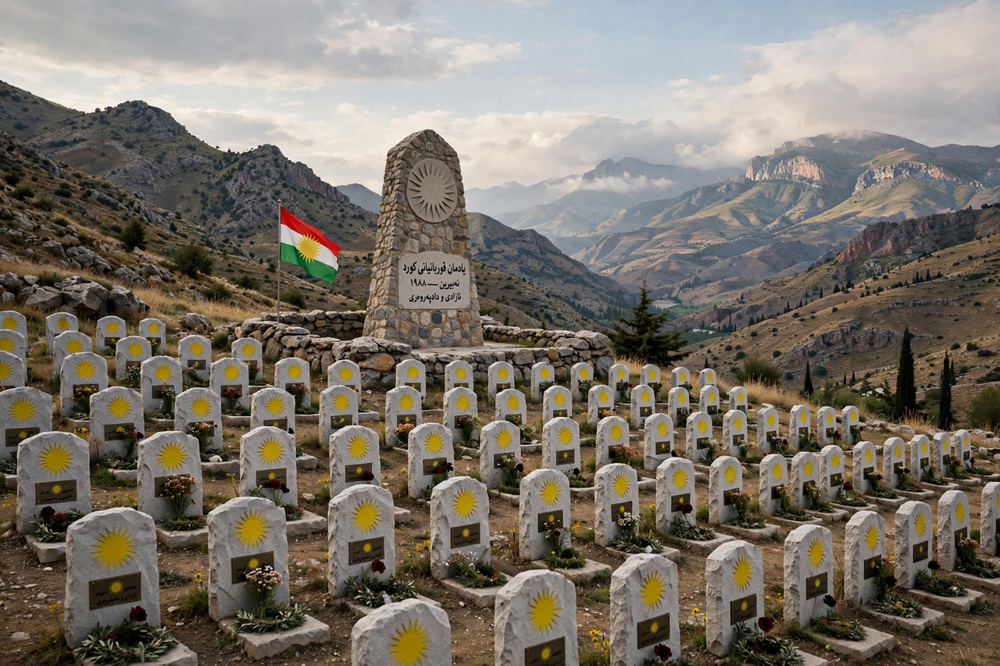

| Anfal campaign | |
|---|---|
 | |
| Date | 1986–1989 (main operations February–September 1988) |
| Location | Iraqi Kurdistan, northern Iraq |
| Perpetrators | Ba'athist Iraq under Saddam Hussein; directed by Ali Hassan al-Majid |
| Deaths | Estimated 50,000–182,000 Kurdish civilians |
The Anfal campaign (Arabic: حملة الأنفال, Ḥamlat al-Anfāl; Kurdish: شاڵاوی ئەنفال) was a counterinsurgency operation carried out by the Ba'athist government of Iraq under Saddam Hussein against the Kurdish population of northern Iraq in the closing years of the Iran–Iraq War. Human rights organisations and subsequent court rulings have characterised the campaign as genocide: between 50,000 and 182,000 Kurds were killed, thousands of villages were destroyed, and chemical weapons were used against civilians, most notoriously in the attack on Halabja.
Kurdish parties, the Kurdistan Democratic Party and the Patriotic Union of Kurdistan, had long sought autonomy from Baghdad and during the Iran–Iraq War cooperated with Iran, whose troops and Kurdish allies operated in the border mountains. In 1987 Saddam Hussein granted his cousin Ali Hassan al-Majid sweeping powers as secretary general of the Ba'ath Party's Northern Bureau, with authority over all state agencies in the Kurdish region. Al-Majid — later known as "Chemical Ali" for his use of poison gas — ordered the depopulation of vast "prohibited areas": villages were to be razed, and their inhabitants killed or deported.
The name "Anfal" comes from al-Anfāl, the eighth sura of the Quran, meaning "the spoils of war" — a name Iraqi propaganda applied to the operations.
The main Anfal operations ran in eight stages between 23 February and 6 September 1988. Iraqi forces, supported by pro-government Kurdish militia (the jash), swept through rural areas district by district. Typically, villages were bombarded — sometimes with chemical agents including mustard gas and nerve agents — then rounded up; men and boys of fighting age were separated, transported away and executed in mass graves in the deserts of western and southern Iraq, while women, children and the elderly were sent to detention camps such as Nugra Salman, where many died of exposure, starvation and disease, or were also killed.
On 16 March 1988, in an attack often treated as part of the wider campaign though technically separate, Iraqi aircraft dropped chemical weapons on the Kurdish town of Halabja, killing an estimated 3,200–5,000 civilians in the largest chemical attack directed at a civilian population.
A general amnesty in September 1988 ended the offensive, though killings and disappearances continued into 1989. In all, an estimated 3,000–4,000 villages were destroyed and roughly a million people displaced.
The campaign came to wide international attention after the 1991 Gulf War, when mass graves and captured Iraqi documents (some 18 tons of records analysed by Human Rights Watch) documented the bureaucracy of the killings. After the 2003 invasion of Iraq, the Iraqi High Tribunal tried Saddam Hussein separately for Anfal: in June 2007 Ali Hassan al-Majid and two co-defendants were convicted of genocide and sentenced to death; al-Majid was executed in 2010. Saddam's own Anfal trial was cut short by his execution in December 2006 following his conviction in the Dujail case. Several governments and parliaments have formally recognised Anfal as genocide, and 14 April is commemorated as Anfal Remembrance Day in the Kurdistan Region.